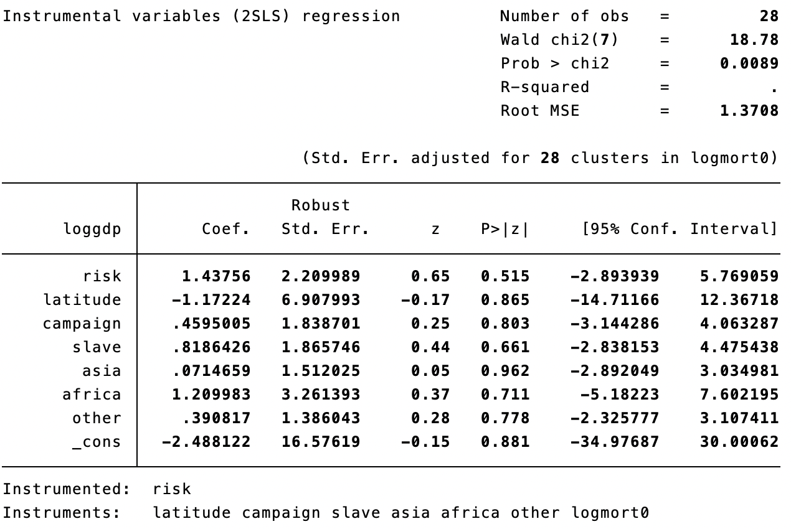
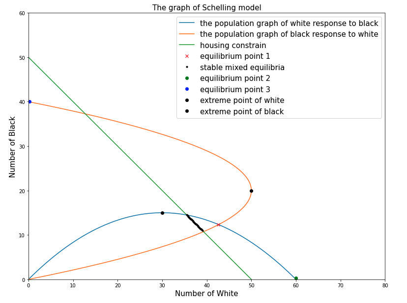

📊 ECO-102 Topics in Economics (Econometrics, Development Economics, Social Economics) 经济学主题(计量经济学，发展经济学与社会经济学)

Table of Contents
This course provides an overview of how the concepts in economic analysis are applied through the real-life examples of scientific research in economics. Students will learn how theoretical and empirical methods in economics are employed in the analysis of diverse subjects, such as economic growth, environmental regulation, public policy, networks, firms’ behaviors, etc.
The first part of the course introduces standard approaches to empirical economic research, including linear regression, instrumental variables, randomized control trials, difference in difference. In each lecture, an application is presented from recent empirical research papers in the fields of Development and Environmental Economics.
The second part introduces the economic approach to various social phenomena, with a particular focus on how social interactions shape markets through broad mechanisms such as discrimination, imitation, or segregation. In each lecture, a particular topic is presented, using a combination of simple theoretical models with empirical illustrations
Professors
References
- Econometric Analysis, 8th Edition, William H. Greene
- Microeconomics: Theory and Applications with Calculus (The Pearson Series in Economics) 4th Edition, Jeffrey Perloff
Course Organization
- 14 lectures (1.5h) and 14 Tutorials (2h) 49 hours in total with 5 ECTS
Course Arrangement
📚 Part 1 - Empirical Economic Research Design with Application to Development
-
LEC1: Linear Regression / TD1: Introduction to Stata and
-
LEC2: Standard Errors and Hypothesis Testing / TD2: Linear regressions and hypothesis testing Monte Carlo
-
LEC3: Omitted Variable Bias / TD3: Replicate Mankiw et al (1992)
-
LEC4: Instrumental Variables / TD4: Albouy Comment on The colonial origins
-
LEC5: Randomized Control Trials / TD5: Practice test on Environment Economics
-
LEC6: Difference in Difference / TD6: Test on Development Economics
-
LEC7: Fixed Effects with IV / TD7: IV example with fixed effects
📚 Part 2 - Social Interactions: Models and Empirical Illustrations
-
LEC8: Imitation and Emulation. The Social Multiplier / TD8: Consumer Theory - the Chain Rule
-
LEC9: Standard Errors and Hypothesis Testing / TD9: The impact of the number of children on the participation decision of women - using the French housing survey
-
LEC10: Segregation / TD10: Practice on the tipping model + Computing Racial Segregation Indices in Los Angeles
-
LEC11: The Marriage “Market” / TD11: Practice on marriage output matrices + Computing measures of assortative mating using the French housing survey, illustration with graphs
-
LEC12: Discrimination / TD12: Test
-
LEC13: Crime / TD13: Why do immigrants more often live in public housing? Using the French housing survey
-
LEC14: Networks / TD14: Review Session - General
Samples of Projects
- Albouy Comment on The colonial origins
* Yubo Cai
* 09/03/2022
* ECO102 TD4
clear all
* Exercise 1
*A refresher on IVs:
* What is an Instrumental Variable? Why do we use them?
* See course. It is a variable used to correct endogeneity issues with one of the explanatory variable. We use them to get correct estimates when we have an endogeneity issue.
* In the case of \citet{acemoglu2001colonial}, can you recall what they study, what variable they use as an IV and why?
* They try to assess causaly how institutions can affect economic performance. They use log gdp per capita PPP as a dependent variable and
* approximate the effect of institutions using Expropriation Risk. They focus on former European colonies (broadly conceived)and use the settlers
* mortality rate as an IV for today's expropriation risk. ."
* What are the two conditions that should be met when using an IV?
* Strong correlation with the endogenous explanatory variable.
* Exclusion restriction: the instrument is not correlated with the error term of the explanatory equation controling on other covariates.
* This implies in particular that there is no omitted variable that is both correlated with the instrument and the dependent variable (see graph on board during the TD)
* AND that the instrument has no direct effect on the dependent variable (the only effect it has is through the explanatory variable which is instrumented).
* If the model is y =a+bx+e and z is the instrument, the two conditions can be rewritten:
* cov(z,x) != 0
* cov(z,u) == 0
* Exercise 2
use "/Users/apple/Downloads/ajrcomment.dta"
generate GDP1995 = exp(loggdp)
twoway scatter mort GDP1995
twoway scatter logmort0 loggdp
/* We can tell directly from the graph that the two variable have correlation
also we have some outliner that much higher than others which we would better to
take log to collect and centralize the data */
* Go to Moodle and download the dataset ajrcomment.dta. Let us start with a short comment on the use of log in economics.
* In both papers the authors use log GDP per capita in 1995. Create a variable gdp that contains the GDP per capita in 1995. (We are referring to the natural logarithm here).
* Create a scatter plot of mortality rates (y-axis) against GDP per capita in 1995 (x-axis). Do the same with log mortality rate and log GDP. Compare the two. What do you observe?
* Due to outliers the table without log values stacked in one corner of the graph.
* What is the benefit of using log values in tables?
* With log the growth is multiplicative not additive. This makes tables containing variables with a large range of values much more readable. This is
* especially useful when the variable grows exponentially (e.g. gdp growth).
* Exercise 3
/*
1st stage: exp risk = a + b log.mortality rate + c latitude + u
2nd stage: log GDP = alpha + beta exp.risk hat + gama latitude + epsilon
*/
reg risk logmort0 latitude
predict riskhat
reg loggdp riskhat latitude
ivregress 2sls loggdp latitude (risk=logmort0), first
* Exercise 4
/*
measurement error
*/
reg risk logmort0 latitude, robust cluster(logmort0)
* Exercise 5
drop if source0==0
ivregress 2sls loggdp campaign slave asia africa other (risk=logmort0), cluster(logmort0) first

- Scilling Model

x = np.arange(0, 60, 0.1)
y_1 = x*(1-x/60)
y_2 = x*(5-x/8)
y_3 = 50 - x
fig = plt.figure(figsize=(13, 10))
plt.xlabel('Number of White', fontsize=15)
plt.ylabel('Number of Black', fontsize=15)
plt.title("")
plt.plot(x, y_1, marker='', label='the population graph of white response to black')
plt.plot(y_2, x, marker='', label='the population graph of black response to white')
plt.plot(x, y_3, marker='', label='housing constrain')
plt.plot(x[426], y_1[426], 'rx', label='equilibrium point 1')
plt.plot(x[355:391], y_3[355:391],'k.', label='stable mixed equilibria')
plt.plot(60, 0.3, 'go', label='equilibrium point 2')
plt.plot(0.2, 40, 'bo', label='equilibrium point 3')
plt.plot(30, 15, 'ko', label='extreme point of white')
plt.plot(50, 20, 'ko', label='extreme point of black')
plt.xlim(xmin = 0, xmax=80)
plt.ylim(ymin = 0, ymax=60)
plt.legend(loc='upper right', fontsize=15)
plt.title('The graph of Schelling model', fontsize=15)
plt.show()

Tools of this course
STATA, R studio, Latex, Overleaf, JupyterLab
Copyright
Copyright by Geoffroy Barrows, Benoit Schmutz, Yubo Cai, Ecole Polytechnique